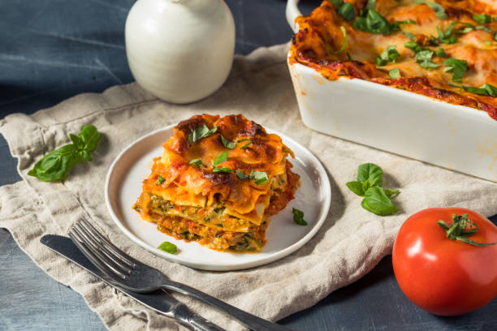

Veggie Lasagna

The Recipe
This vegetarian lasagna is a delicious and healthy alternative to traditional lasagna, packed with fresh vegetables and herbs.
The recipe below is easy to follow and meant for four people.
Ingredients
- 12 lasagna noodles
- 2 cups ricotta cheese
- 1 cup grated parmesan cheese
- 1 cup chopped spinach
- 1 cup chopped zucchini
- 1 cup chopped bell peppers
- 1 cup chopped mushrooms
- 2 cloves garlic, minced
- 1 tablespoon olive oil
- Salt and pepper to taste
Instructions
- Cook lasagna noodles according to package directions.
- In a large skillet, heat olive oil and sauté garlic until fragrant.
- Add spinach, zucchini, bell peppers, and mushrooms. Cook until vegetables are tender.
- Stir in ricotta cheese and parmesan cheese until well combined.
- Season with salt and pepper to taste.
- Layer the cooked noodles and vegetable mixture in a baking dish.
- Bake for 30 minutes or until bubbly and golden brown.
Home